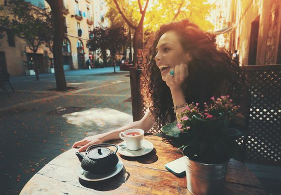

<!-- We don't need full layout here, because this page will be parsed with Ajax-->
<!-- Top Navbar-->

<div class="pages">
  <!-- Page, data-page contains page name-->
  <div data-page="about" class="page">
    <!-- Scrollable page content-->
    <div class="page-content">
      <div class="navbar">
  <div class="navbar-inner">
    <div class="left"><a href="#" class="back link"> <i class="icon icon-back"></i><span>Back</span></a></div>
    <div class="center sliding"> </div>
    <div class="right">
      <!-- Right link contains only icon - additional "icon-only" class--><a href="#" class="link icon-only open-panel"> <i class="icon icon-bars"></i></a>
    </div>
  </div>
</div>
      <div class="content-block presentcon">
    
    <div class="row no-gutter">
        <div class="col-100">

        </div>
    </div>
    <h4>
        
كيف عليك التصرف عند تعرضك لموقف محرجك؟
من الطبيعي أن تتعرضي، يا عزيزتي، خلال حياتك اليومية لمواقف محرجة خارجة عن السيطرة، ولكن المهم هو كيفية التصرف أو التعاطي معها خصوصاً عندما تكون الامور علنية.
كشفت خبيرة الإتيكيت فيرا يمين أنه من الموضوعات التي تثير الإحراج بالنسبة الى مرتكبيها والمرح بالنسبة الى الآخرين هي الحازوقة، فلا شكّ في أنّها تحدث بطريقة غير إرادية ولا يمكن للإنسان التحكّم بها وبالتالي لا تتطلّب الاعتذار، إلّا أنّ على من يعاني منها التصرّف بحنكة وذكاء لتجنّب إزعاج الآخرين. (اكتشفي مع ياسمينة أمور تفرضها عليك الاتيكيت)

وأشارت الى انه في حال إستمرّت الحازوقة وقتاً طويلاً، يكون من الأفضل لك الانسحاب من الغرفة والذهاب الى الحمام مثلاً والقيام بوصفات منزلية تسرّع من إيقافها، كحبس الانفاس مدّة من الوقت، أو الوقوف على اليدين، او الشرب من الجهة المعاكسة للكوب.
    </h4>
      </div>
    </div>
  </div>
</div>